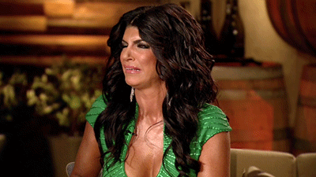
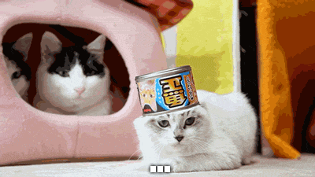
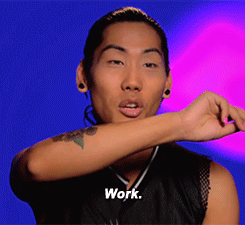
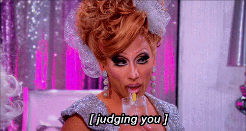
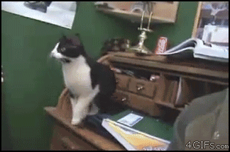
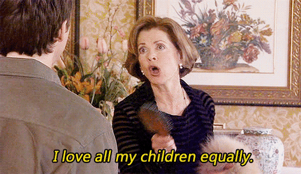

9 Fun Facts Sur La Fille Pas Sympa
1- J’achète toujours les légumes emballés pour ne pas devoir interagir avec l’être humain qui est chargé de peser les légumes au poids.

2- Je refuse de danser dans une boîte où on ne passe pas du Beyoncé. Question de principes.

3- Quand j’entends certaines chansons je ne peux m’empêcher de les relier mentalement à des vidéos de chatons dansant dessus et ça me pourrit mes soirées. Genre ÇA: [embed]https://www.youtube.com/watch?v=WY3mrceM1_Y[/embed]
4- Je fais semblant d’être une gourmet en société, alors qu’en réalité mon plat préféré c’est les ramen:

5- Quand j’étais à la fac, je me suis fait passer pour une auteure célèbre qui est mon homonyme, j’ai même dédicacé des livres et donné des conseils d’écritures bidons à des Nice Guys qui se rêvaient écrivains.

6- Comme je ne sais jouer qu’une chanson et demie à la guitare, je la joue puis rends l’instrument d’un air blasé, du style “vous n’êtes pas prêt.es pour entendre une telle merveille, je vous préserve”.
7- Je méprise secrètement les gens qui n’aiment pas manger épicé.

8- Je suis tellement maladroite avec mon corps qu’une fois, lors d’un repas, j’ai préféré avoir faim plutôt que tendre le bras par dessus la table pour atteindre le seul truc végane, de peur de tout faire tomber.

9- J’ai la fâcheuse manie d’adopter tous les animaux que je considère être en détresse (c’est-à-dire, me regardant avec des yeux larmoyants suppliant de la nourriture). J’ai déjà un chat et demi et deux limaces (OUI une limace peut avoir des yeux larmoyants).
